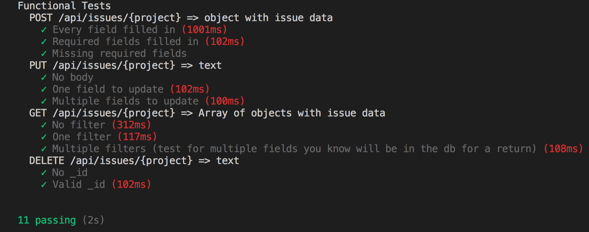

Project Journal: January 04, 2019 (Happy New Year!)
Completing a project
I tend to be Captain Obvious most days of the week, so the following statement falls in line: it's a wonderful feeling to complete a project. After much wrestling with MongoDB and Mocha, I was able to complete the Project Issue Tracker project on freeCodeCamp this week. And it was a wonderful feeling.
Main takeaways...
Using Mocha
It took a bit longer than desired for me to configure Mocha in order to run the required tests for the project. Essentially, I was having trouble
resolving how to get the suite object available in my file. After a few rounds of Googling, I settled on the following
lines:
var Mocha = require('mocha');
var mocha = new Mocha();
mocha.ui('tdd');
Prior to that, I had been erroneously calling the ui method on the Mocha object.
Additionally, specifying tdd makes suite available. From their
docs:
The BDD interface provides describe(), context(), it(), specify(), before(), after(), beforeEach(), and afterEach().
The TDD interface provides suite(), test(), suiteSetup(), suiteTeardown(), setup(), and teardown():.
Satisfaction of test outputs
I have found testing to be, while frustrating at times due to the learning curve of these libraries, very comforting. There is a savory level of certainty when you can see, in plain english, whether or not your code works. And that gives a boost of confidence when heading in to debug it, finally leading up to a tangible sense of achievement when you resolve the issues.
So on that note I'd like to leave this satisfying screenshot here:

Restarting projects
After listening to the Full Stack Radio podcast episode Ben Orenstein - How to Build an App in a Week I revisited three projects I want to work on and reframed my vision for them to a two week perspective. The outcome was a (maybe over-)simplified objective for each project, to be accomplished in two weeks. I also decided to work on them in CodeSandbox as much as I can, in order to contrast that experience with working in a local environment on my desktop.
The trimmed down visions of my projects:
- et130webapp
- What task is impossible to do manually?
- Students: create their own practice problems and answers
- Teachers: create unlimited practice problems and answers
- Core Functionality
- Generate practice problems for students
- ThoughtBoard
- What task is impossible to do manually?
- This app doesn't pass this ask
- What is the task that is annoying to do manually?
- Write down and then iteratively categorize and group your thoughts
- Core Functionality
- Allow user to write down and then iteratively categorize and group those thoughts
- FeelsTracker
- What task is impossible to do manually?
- Remember exactly what emotion you felt, and when you felt it, over time
- Core Functionality
- Allow user to record what emotion they are feeling at a given time
Two weeks start...now! *nervous laugh*
Syntax listens
Two enjoyable episodes I listened to this week:
Both episodes gave me another reference point for my learning curve, as I was either able to relate in a tangible way or at least understand the context of the topic they were discussing intangibly. I'm looking forward to finishing a couple of their newer episodes this coming week.